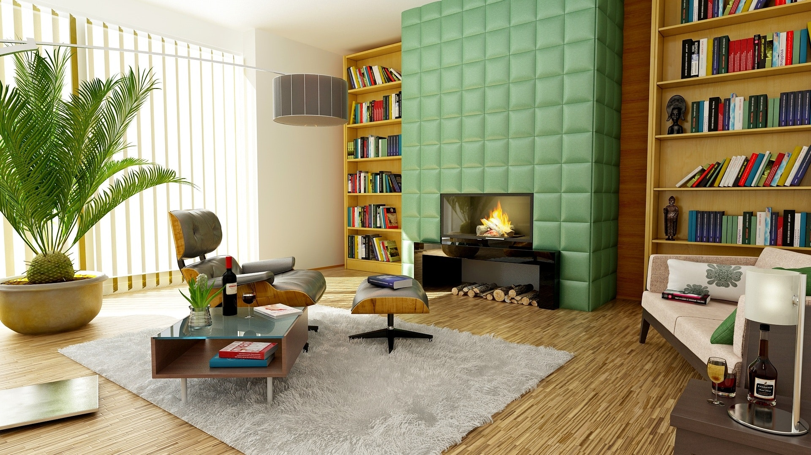

From RealEstate
Moving into a new home can be one of life’s great joys, but it can also be a time of uncertainty, especially when it comes to decorating. How do you make your space look its best while reflecting your personal sense of style? Do it well and you’ll end up with a comfortable, happy home. Do it poorly and you’ll end up with a hodge-podge of furniture, fabrics and paint colors that never congeal into a pleasing whole. With a little planning, and by following the same steps used by professional interior designers, you’ll have a much greater chance of success.
"We shape our homes and then our homes shape us."
Matching the scale of furniture to the scale of a room is critical. A deep sectional sofa can easily overpower a small room and svelte chairs can get lost in a wide-open loft. Before you start designing, measure the length and width of each room you intend to decorate, along with the ceiling height and elements that could get in the way – stairs, columns, radiators and other obstructions. It’s also a good idea to measure window openings, along with the wall space below, above and to the sides of each one, to get ready for window coverings.

Once you have the measurements of your room, it’s time to put them to use with a floor plan that gives you a bird’s eye view of the entire home. One option is to draw a floor plan the old-fashioned way, with paper, a pencil and a ruler. However, most professional designers use drafting software like AutoCAD. Once you have the outline of the space, start experimenting with the placement of furniture, making sure that the footprint of each piece is scaled to match the size of the drawing.

Look in design books and magazines, as well as at online resources like Houzz, Pinterest and Instagram to sharpen your personal style. “Figure out the style that you respond to most,” said Brad Ford, an interior designer in New York City, and develop a dossier of favorite images.

There’s no getting around the math: If you splurge on an unexpectedly expensive chair, you’ll have less money available for the rest of the home. “You want to make sure you're being strategic about how you spend your money,” said Mr. Ford. “A budget gives you a roadmap for how to divide the costs of things between rooms.” You can still make an exception if you find a one-of-a-kind dining table, he noted, but in order to pay for it you have be thoughtful about where else you can cut back.